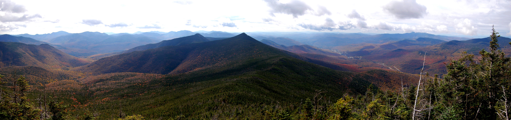

For the last ten years I have been a stay at home dad by day and a pizza man by night. I have two boys ages 5 and 10. In 2018, knowing both of my kids would soon be in school, I decided to go back myself and obtain an associate degree in Computer Technology and a certificate in Software Development. I'm currently on schedule to graduate in 2021. In my free time I enjoy playing the guitar and harmonica, cooking BBQ, hiking, kayaking, and rooting for the Red Sox and Patriots.

“A man who limits his interests, limits his life.”
― Vincent Price